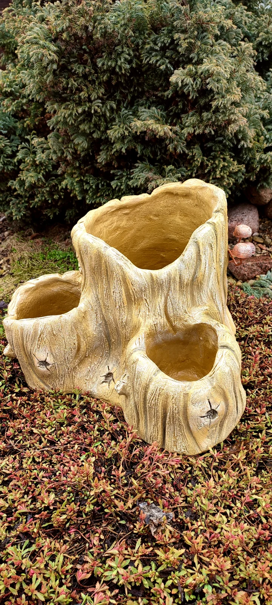
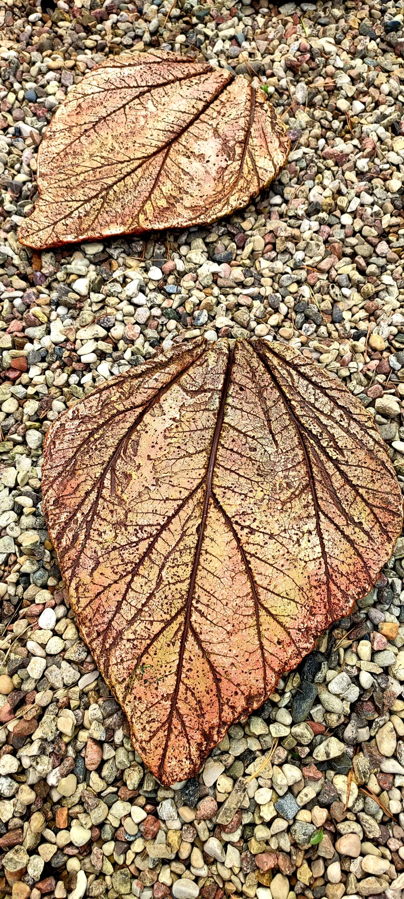
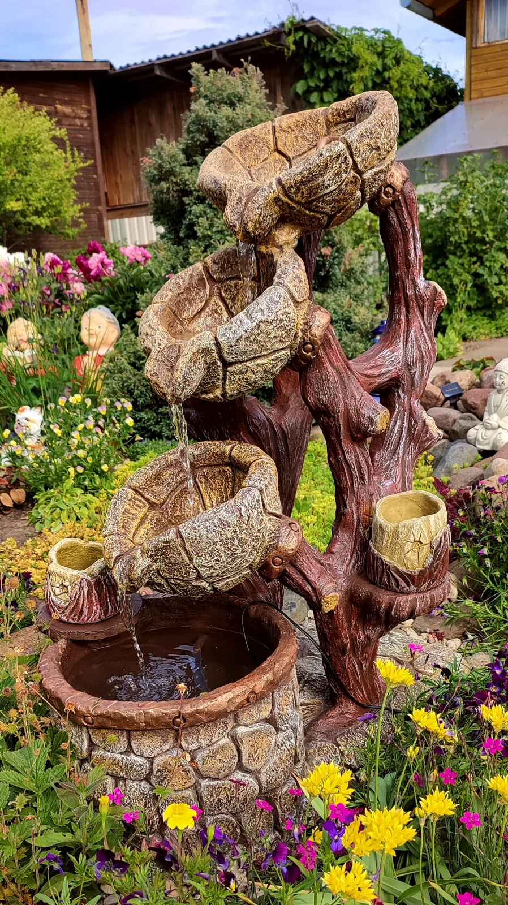
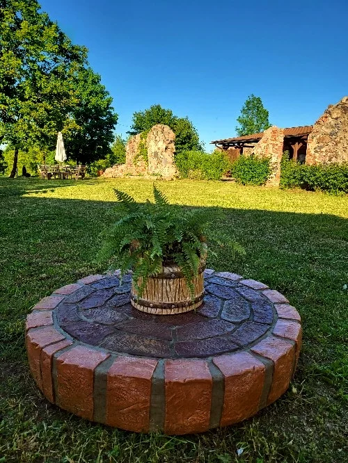

Žurnāls
Piezīmes no darbnīcas
Par materiāliem, gadalaikiem un to, kā top katrs darbs. Rakstām tad, kad ir ko pastāstīt.

Laipni lūdzam mūsu darbnīcā
Kā izskatās viena diena pagalmā Daugavpilī — no pirmās ģipša partijas līdz vakara svecei.
Lasīt
Kāpēc mēs izstrādājām savu akmens recepti
Par ģipsi, cementu un mikrosilīciju — un to, kāpēc mūsu darbi iztur ziemu.

Sveces otrā dzīve
Četri vienkārši soļi, lai sveces trauks kļūtu par puķu podu.

Ziema pagalmā
Kā sagatavot dārza darbus aukstajam laikam.
Tukša žurnāla stāvoklis
Pirmās piezīmes top
Mēs rakstām pirmos stāstus no darbnīcas. Pierakstieties vēstulēm, un mēs tos atsūtīsim jums.
Saņemt vēstules